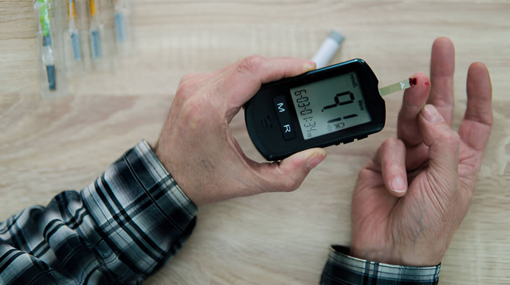

The Hidden Risks: Pesticide Exposure and Type 2 Diabetes

The link between agricultural chemicals such as pesticides, fungicides, and insecticides
and the development of diabetes in humans is a topic of increasing concern and ongoing
research. These chemicals, particularly persistent organic pollutants
(POPs), may interfere with metabolic processes and contribute to the risk
of type 2 diabetes.
Mechanisms Linking Agricultural Chemicals to Diabetes
Endocrine Disruption:
Many pesticides, fungicides, and insecticides act as endocrine
disruptors, mimicking or blocking hormones in the body.
They can interfere with insulin signaling, leading to insulin
resistance, a hallmark of type 2 diabetes.
Examples include organophosphates, carbamates, and organochlorines.
Toxic Effects on Pancreatic Beta Cells:
Beta cells in the pancreas are responsible for producing insulin. Certain
pesticides (e.g., organochlorines) are directly toxic to these cells.
Damage to beta cells reduces the body's ability to regulate blood sugar
effectively, contributing to the onset of diabetes.
Inflammation and Oxidative Stress:
Agricultural chemicals can induce oxidative stress, leading to
the production of free radicals that damage cells.
Chronic oxidative stress and resulting inflammation are strongly associated with
insulin resistance and type 2 diabetes.
Disruption of Fat Metabolism:
Many of these chemicals are lipophilic, meaning they accumulate in fat tissues.
Over time, their presence can disrupt fat metabolism, release inflammatory
cytokines, and increase the risk of metabolic syndrome and diabetes.
Mitochondrial Dysfunction:
Some pesticides impair mitochondrial function, which affects energy metabolism
and glucose utilization in cells.
Impaired mitochondrial activity is a known factor in the development of
diabetes.
Specific Classes of Chemicals and Their Links to Diabetes
Pesticides:
Organochlorines (e.g., DDT): These are persistent in the
environment and accumulate in human tissues. Studies show an association with
increased diabetes risk.
Organophosphates: Commonly used pesticides linked to insulin
resistance and metabolic dysfunction.
Neonicotinoids: Emerging evidence suggests a potential link to
metabolic
disturbances.
Fungicides:
Certain fungicides (e.g., triazoles) have shown endocrine-disrupting properties
in laboratory studies.
They can indirectly affect insulin sensitivity through hormonal pathways or
oxidative stress.
Insecticides:
Pyrethroids, widely used in agriculture, have been implicated in insulin
signaling disruption.
Insecticides can also alter gut microbiota, which plays a role in glucose
metabolism.
Specific Chemicals:
Studies highlighted chemicals such as endosulfan, mevinphos, and benlate (a
fungicide) as particularly associated with higher diabetes risk. These chemicals
may persist in the environment, leading to prolonged exposure even after their
use has been discontinued.
Environmental Persistence and Food Contamination:
Many pesticides remain in the environment or accumulate in food products,
leading to chronic low-level exposure among consumers. This could contribute to
the rising prevalence of metabolic disorders like diabetes.
Evidence from Research Studies
Epidemiological Studies:
Farmers and agricultural workers exposed to higher levels of these chemicals
show increased rates of type 2 diabetes compared to non-exposed populations.
Communities living near areas with heavy pesticide application also exhibit
higher diabetes prevalence.
Animal Studies:
Experimental studies in animals have shown that chronic exposure to certain
pesticides leads to insulin resistance, impaired glucose tolerance, and increased
fat accumulation.
Human Biomonitoring Studies:
Higher levels of pesticide residues detected in blood or urine are correlated with
increased risks of type 2 diabetes. Persistent exposure, even at low levels, is
linked to cumulative metabolic damage over time.
Steps to Minimize Risk
Reduce Exposure:
Wash produce thoroughly or peel it to remove surface residues.
Opt for organic produce where possible, particularly for high-residue crops like
berries and leafy greens.
Promote Safer Agricultural Practices:
Support sustainable farming methods that minimize chemical usage, such as
integrated pest management (IPM) and organic farming.
Policy Advocacy:
Advocate for stricter regulations on harmful chemicals and more research
into safer alternatives.
Detoxification and Antioxidant Support:
A diet rich in antioxidants (e.g., vitamin C, E, selenium) may help counteract
oxidative stress caused by chemical exposure.
Foods like cruciferous vegetables, berries, and green tea support the body’s
detoxification pathways.
Education and Awareness:
Educate agricultural workers and the general public about the risks
associated with these chemicals and the importance of protective measures
Conclusion
While pesticides, fungicides, and insecticides improve agricultural productivity, their potential health risks, including a link to diabetes, cannot be ignored. The evidence highlights the need for reducing exposure, adopting safer agricultural practices, and conducting more research to understand and mitigate these risks.
For more detailed insights, you can refer to the studies hosted by the National Institutes of Health (NIH) and the journal Diabetologia, which provide comprehensive analyses of these associations.